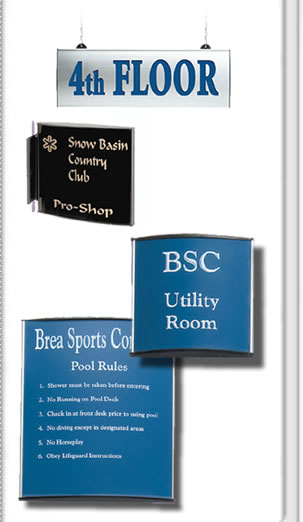

|
What happens when you combine the simple easy
to use aspects of a traditional holder with the flexible
nature of custom frame lines? You get Curves! Innovative and
cost effective.
Curves adds a whole new dimension to sign frames.
Available in 27 standard sizes and 9 anodized
colors, Curves has many applications including
personnel signs, room identification and direction
way finding signs. Curves can be mounted to a
wall or partition, hung from the ceiling with
fixed bracket or wire, flag mounted or used
as a desk sign holder ...CURVES... literally,
the options end only with your imagination!
FEATURES
- 27 Standard Sizes
- 9 Anodized Color Choices
- Tamper Resistant
- Custom Sizing Available
- Uses 1/16" Engraving Material
- Can use a Lens with paper insert
TYPICAL USES
- Personnel Signs
- Room Identification
- Point of Purchase
- Directional Ceiling and
Wall Signage
- Directories
|

|